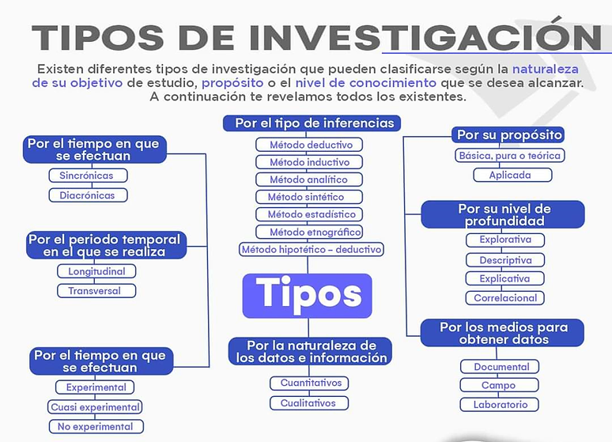

LA INVESTIGACIÓN:
El ser humano desde sus comienzos se ha cuestionado muchas veces permitiendole indagar por exiastencia, naturaleza y experiencias que lo rodean en su entorno, logrando asi evolucionar en su conocimento encontrando respuestas a sus inquietudes por medio de lo que conocemos como investigación. La investigación es el método que permite por medio de procesos encontrar respuestas y soluciones a preguntas que surgen de una realidad personal, social, y cotidiana, es importante identificar sus características, etapas y los diferentes diseños de la investigación .
El DISEÑO DE INVESTIGACIÓN
Es el encargado de recolectar información con procedimientos específicos recopilando datos dependiendo del tema que se requiera abordar, es importante identificar que método es mas adecuado para la problemática que se quiere estudiar para ello contamos con los siguientes métodos: Cuantitativo que se encarga de los números, base de datos y estadísticas. Cualitativo: Se encarga de las palabras, significados búsqueda mas experimental y cotidiana.
DISEÑO CUALITATIVO:
Este tipo de diseño se ha convertido en un proceso multidisciplinario involucrando muchas disciplinas. Las cuales se están enriqueciendo en cada una de sus áreas provocando nuevos conceptos , análisis, interpretación, concepto , descripción de cualquier tema. Este proceso de diseño se caracteriza por: Reconocimiento del investigador y sus participantes necesidad de averiguar problemáticas o cuestionamientos. Recolección de datos en un determinado lugar. Busca mejorar la situación del individuo o dar solución a la problemática

Investigación Analítica:
Esta diseñada para estudiar conceptos y sucesos históricos a través de análisis de documentos , testimonios orales y demás recursos, aquí el investigador , identifica , estudia y reduce la información mas importante para poder interpretar el contexto del fenómeno desglosando toda la información recolectada. Es muy utilizado al principio de todas las investigaciones, ya que permite la justificación y da un enfoque al marco teórico, permitiendo que la búsqueda de la información y todo lo recolectado en el proceso quede documentado.

Investigación Etnográfica:
Es la búsqueda de una descripción a profundidad de la vida de los grupos en un ambiente o contexto donde se describe, analiza, las ideas creencias , practicas culturales de las comunidades , se busca describir el contexto, comportamiento , estrato , significado a circunstancias comunes , estudia las irregularidades de un grupo en común El investigador se involucra en la ida del grupo a investigar por determinado tiempo actuando como observador desarrollando y experimentando creencias, valores , perspectivas motivaciones; mientras esto lo realiza el investigador al mismo tiempo se hace una serie de preguntas que le permitirán direccionar la investigación a un solo punto. * cualidades que tienen * reglas patrones de conducta * tipos de interacción * creencias * condiciones de vida. entre otras

Estudio de Caso:
Se centra en analizar una situación particular para comprender el caso a estudiar no importa el individuo lo importante es que sea algo de tiempo y lugar definidos, el investigador se enfoca en un interés en concreto conociendo os diferentes motivos que lo llevaron hacer la investigación , donde las características son mas fáciles de estudiar en cuestión de calidad y cantidad de interacción , esto genera hipótesis para contrastar con estudios anteriores y generando nuevos conocimientos o desarrollo de la situación en especifico presentada.

DISEÑO CUANTITATIVO:
Su finalidad es explicar, controlar y predecir fenómenos mediante el método científico dando hipótesis dando res a expresiones ¿cómo? ¿ Cuánto? ¿ alguna relación? todo esto para establecer variables de causa y efecto y des esta formar lograr planteamientos positivos con valor y resultados estadísticos y contables.

Diseño descriptiva:
en describir una situación real mediante la observación sistemática , no participante, con preguntas establecidas a una muestra de población capaces de dar información estableciendo una escala de medida en este proceso se establece un solo objetivo de estudio bajo varios instrumentos de recolección de datos.

Diseño Experimental:
El investigador interviene y manipula una o varias variables para lograr comprobar los efectos que generan las variables, esto puede ser trabajo por grupos de control elaborando comparaciones mediante la observación en cierto tiempo estableciendo un antes , durante y después obteniendo resultados, hay que ser consientes que durante este proceso se pueden presentar dificultades ya que todo se basa en la experimentación y el resultado puede variar.

Diseño Correlacional:
Es la metodología donde el investigador establece hallar explicaciones bajo un estudio de varias variables estudiando cada una de ellas sin intervenir en las mismas o ser manipuladas, este proceso se realiza por medio de estadísticas, comparación de datos positivos, negativos o neutras.